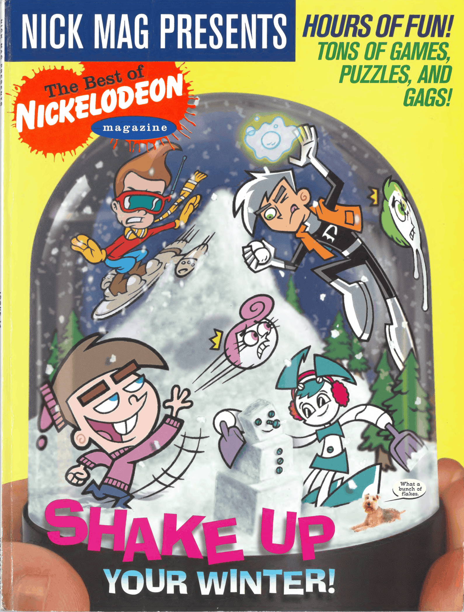
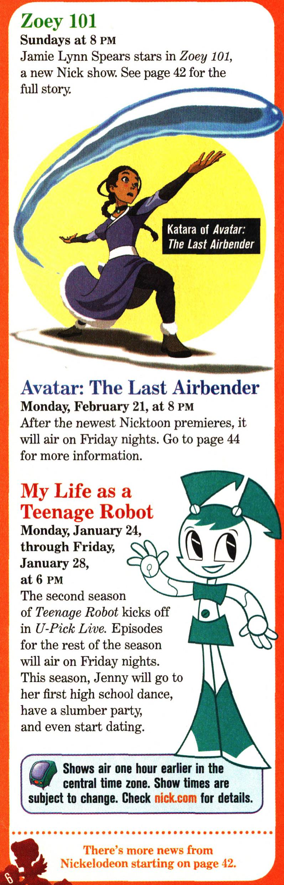

my life as a teenage nickelodeon magazine subscriber
Do you like My Life As A Teenage Robot? Do you just wish there was.. More? Well, you may be in luck!
Here's a thought: the only reason Jenny appears in so much media is because she's the only popular Nicktoons female lead. All the better for me!
Rob Renzetti
You know who this is. Unless you don't. He wrote a continuation of MLAATR: https://robrenzetti.com/newsletter-archive/
Nickelodeon Magazine
Unrelated to Jenny, but holy shit these old magazines are terrifying. Being In America in 2009 must've been some kind of cosmic horror experience.
I.. don't know if this is a complete list? If you want to help me find more, just try to look up issues from 2003-2005 as that's when the show was actively airing (note that it also technically aired on Nicktoons in 2008-2009 for the third season but I would be heavily surprised if the magazine ever advertised a Nicktoons show). Also these are my favorite because I think Jenny translates really well to the comic book format, superhero and all.
here is every Jenny drawing I could find in available Nickelodeon Magazines:
1. Nickmag #110 April 2005, page 37

2. Nickmag Presents 2005 Best Of



Jenny goes so well with snow <3
3. Nickmag Presents 2004 Best Of, page 6

Does this, even count? It's just her default render.. I don't know! Also Ms. Wakeman and Sheldon are on the next page but IDRC about them. Please count how many female characters you see on this page..
4. Nickmag #108 February 2005, page 6. Now might be a good time to point out that these aren't in chronological order. I couldn't be bothered enough to do that

Her stock ass render. With an exclusive blurb! This is unironically probably the best female-male ratio page in the entire magazine because Zoey 101 and Katara are also here
5. Nickmag Presents 2005 Danny Phantom, page 1
She's scary... Also, comics!


These images specifically are Webrips because I couldn't find any scans of it <3
Wait, are you considered a Nicktoon when you start getting comics in the magazine?
6. Um. I couldn't find this one in the issues. Here's the webrip.


Please note that being a Nicktoon is considered universally good. That makes you part of the main character group. You get to be in videogames, for instance. On the other hand, being ON Nicktoons, the network, is the worst face a show can be sentenced to. It's like a retirement home.
I was originally planning on adding every weird merchandise as well but this was exhausting enough. Jenny merch: t-shirts, Youtooz, pins. A golden pin. Holy shit it's golden?